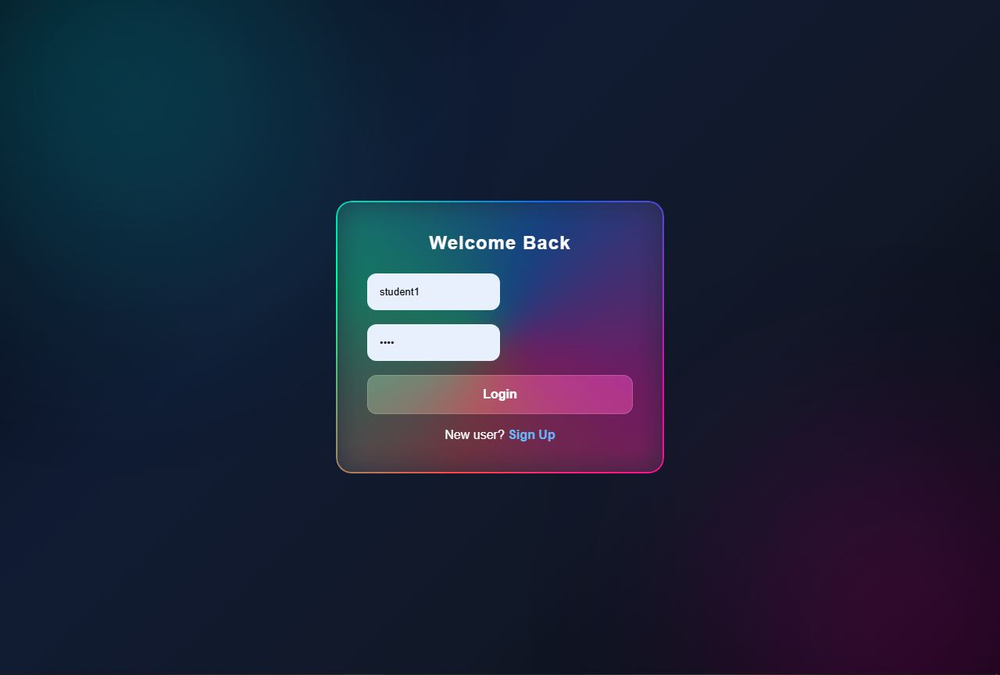

Featured project
School Management System
A complete web-based school management system designed to manage students, teachers, users, marks, classes, and school resources.
View project →Projects
A collection of things I've created while learning, experimenting, and developing my skills.

Featured project
A complete web-based school management system designed to manage students, teachers, users, marks, classes, and school resources.
View project →
Hardware project
An Arduino-based project designed to detect obstacles and explore how hardware and programming can be used to solve practical problems.
View project →
Web project
A web-based project experimenting with video downloading, frontend interfaces, and connecting a website with a Python backend.
View project →
Web design
A responsive personal portfolio website created to showcase my skills, projects, development journey, and contact information.
View Website →